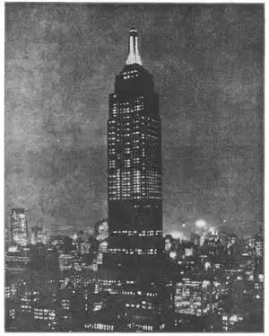

87
THE SCRAPERS OF THE SKY
摩天大厦

HOW high is “up”? For a mountain, “up” may be several miles. For an airplane, “up” may be even higher than the highest mountain. For a building, “up” is a little over one thousand feet. Not nearly so high as the mountain top, not nearly as high as the airplane can fly, but the one thousand feet “up” of the building seems to me even more wonderful than mountain heights or airplane flights.
Very tall buildings, as you know, are called sky-scrapers. They are an American invention and all but a few of them are in the United States. Most American cities have sky-scrapers but the place where they make the finest showing is New York City. New York has almost two hundred sky-scrapers sticking up into the air like the bristles on a monstrous tooth brush. From a distance they are fairy towers, dream buildings, almost unbelievable. And when you have ridden up to the top of one of the very high sky-scrapers; they become even more unbelievable.
Gothic cathedrals have tall towers and lofty spires, but next to the tall sky-scrapers the Gothic cathedrals would not look high at all. How can men, you wonder, possibly build so far above the ground? But there you are, one hundred and two stories above the ground, and people on the streets below look like moving black specks. You pinch yourself and it hurts, so you must be awake and not dreaming. The building is real, after all. What a long time it must have taken to build it!
You are wrong. It takes a very short time to build a sky-scraper. The Gothic cathedrals, you remember, took hundreds of years to build. The Empire State Building in New York City took less than one year. And yet it has one hundred and two stories. Magic!
Here is more magic. A modern sky-scraper is built from auto trucks! It rises in the air according to schedule. Each steel girder, each piece of stone, each section of pipe, rolls into the building on a truck at just the right time. If the wrong piece got there first, it couldn’t be used at once. There would be no place to put it. It would get in the way. Traffic would be blocked on the street. The whole building would have to wait. So the material is taken out of the trucks and hoisted into place at once, instead of being piled up on the ground to wait its turn.
You can easily see, then, that a very important part of building a sky-scraper has to be done beforehand. The plans of the architect and engineer have to be very carefully made and checked. All the material has to be ordered and made ready for use so that it will arrive at just the right time—neither too soon nor too late. And that is one reason why the whole huge, wonderful structure can be put together so quickly and without even blocking the streets around it.
A sky-scraper is made differently from the older kinds of buildings. It has a steel framework. Each story is a kind of steel cage, and on the cage are fastened the outside walls. These walls don’t help at all to hold up the building. The steel cages do all the holding up. The walls are like the walls of a tent—to protect the inside from the weather, not to help support the weight. You would be surprised if you found the outside walls of your house were not resting on the ground, but the outside walls of a sky-scraper do not rest on the ground. They hang on the steel cages. Sometimes you can even see a crack between the sidewalk and the walls of a sky-scraper where the walls aren’t even touching the ground!
Of course no one would want to walk up to the top floor of a skyscraper. It would take too long. If you tried it, you would find you were so tired out when you reached the top that you probably couldn’t walk down again. So sky-scrapers wouldn’t be any good without elevators. A big sky-scraper has many elevators run by electricity. There are locals and expresses, as on a railroad, so that you can reach the top stories quickly without stopping at each floor all the way up. The elevators on the latest sky-scrapers are arranged so that a passenger never has to wait for one for more than a minute.
The first sky-scrapers were built in the last years of the nineteenth century. These early sky-scrapers were shaped like tall shoe boxes standing on end. After many of these box buildings were built, people found that they cut off the light from the streets below and from buildings next door. And so cities made rules about how sky-scrapers should be built. The rules said that sky-scrapers could no longer be built with a shape like a shoe box. The higher the building rose in the air, the rules said, the narrower it had to he.
The lower part of a sky-scraper, for instance, might cover an entire city block. But after the building had risen a certain number of stories, the other stories above had to be set back from the edge of the streets so as not to cut off the light. The tower of the building might be built as high as the sky, just so its base didn’t cover more than one quarter of the base of the first floor of the sky-scraper.
These set-back rules made the new sky-scrapers look quite different from the older ones. The older sky-scrapers looked different, too, because architects had tried to make them in the style of some architecture of the past. Some had Greek columns at the base, although the columns carried no weight and weren’t used for anything except show. Some had huge cornices at the top which were copied from the Renaissance buildings, but were just as useless and false as the columns. The outsides of these sky-scrapers were “fake,” and “fake” architecture can never be very beautiful.
The new sky-scrapers are not “fake.” They are not made to imitate some style of the past. Some people call them “stripped architecture.” The architects tried to make theirshapes beautiful without sticking old-fashioned decorations on the outside. Color began to be used. Several sky-scrapers have the outside walls made of black brick trimmed at the top of the building with gold. The American Radiator Building in New York is black and gold. So is the Richfield Building in San Francisco. Other sky-scrapers have dark red bricks at the lower stories, with the color growing lighter and lighter toward the upper stories. The Chrysler Building and the Empire State Building use the bright nickel-color of rustless steel on the outside.
The hundreds of windows are no longer just holes in the wall. They are used to add to the beauty of the building. In some sky-scrapers the windows look like stripes running from the ground to the top. They seem to carry the eye upward like the lines of a Gothic cathedral. Others have the windows arranged in rows that make stripes across the building instead of up and down. Other sky-scrapers are made like blocks, small blocks on top of larger blocks.

No.87 THE EMPIRE STATE BUILDING AT NIGHT, NEW YORK
（纽约帝国大厦夜景）
Photograph by Publishers Photo Service
But I haven’t yet told you what sky-scrapers are used for. You probably know already. Some are used as offices where people work. Some are used as apartments where people live. Certainly people don’t build sky-scrapers for fun. They have to be useful. And as it costs millions of dollars to build a real sky-scraper, the buildings have to make money after they are built. Sky-scrapers make money by having their rooms rented for offices or apartments. In the office sky-scraper, there is often a bank or a store or even a theater on the first floor. Some office buildings have ten thousand people working in them and when all these people start going home between five and six in the afternoon, they jam the sidewalks and fill the streets with traffic.
Sky-scrapers seem wonderful at a distance, they seem wonderful near at hand, and the more one learns about them the more wonderful they seem. If you’ve never seen a high sky-scraper, it will give you an idea of how very high it is when I tell you that the mail chutes have to be made with parts in them to slow up the letters dropping down from the top, for otherwise the letters would go so fast they would be scorched!
【中文阅读】
多高才算“高”呢？对一座山来说，可能要有几英里才算高山。对一架飞机来说，它甚至能飞得比最高的山还要高。而对一座建筑物来说，有一千多英尺高就算是高楼了。在我看来，一千多英尺高的大楼要比大山或飞机的高度更使人赞叹，尽管没有山那么高，也不及飞机的高度。
如你所知，那些很高的大楼，叫做摩天大厦。那是美国人的发明，而且大部分都在美国。美国大多数城市都有摩天大厦，但是纽约的摩天大楼最为壮观。纽约差不多有两百多座摩天大厦，就像巨型牙刷上的刚毛直插云霄。远远看去，它们就像是童话里的楼塔，梦幻中的蜃楼，让人难以置信。如果是乘电梯登上摩天大厦的楼顶，它们就更让人难以置信。
哥特式大教堂虽都有高塔和直耸的尖顶，但要是建在摩天大厦的旁边，就一点也不显得高了。你肯定会感到奇怪，人怎么会在地上建那么高的大楼呢？但它们确实就在那儿，拔地而起，直达102层高，从上往下看，街上的行人就像移动的黑蚂蚁。你掐自己一下，如果疼痛，就证明自己很清醒，不是在做梦。摩天大厦的确是真的。那建造一座这样的大楼一定要花很长的时间吧？
你错了！还记得吗？哥特式大教堂好几百年才建成，而建造一座摩天大厦所花的时间却非常短。纽约市的帝国大厦不到一年就建成了，而且有102层高。神奇呀！
神奇的事还多着呢！有一座现代的摩天大厦是靠货车建成的！它是按照时间表逐步在空中加高的。每一根钢椼、每一块石头、每一节管道，都由卡车按时拉来立即安装。如果先运到的建材有错，就会影响开工。因为运来的建材没地方放，否则就会挡道，就会导致街上交通阻塞。大楼的整体工程就要停工等待。所以卡车把建材一运到，立马就要卸下并吊到需要的地方，而不是堆在地上等待搬运。
因此也就不难明白，必须事先做好准备工作是建造摩天大厦的一个非常重要的环节。建筑师和工程师必须认真设计图纸，并仔细核查。必须安排好所有的建材，以便在规定的时间派上用场——既不能太早，也不能太晚。这就是为什么如此巨大、壮观的建筑物能这么快就建好，而同时又不影响街道的交通堵塞。
摩天大厦的建法与过去的建筑物不一样。摩天大厦有一个钢架结构。每一层都是一个钢筋笼，外墙就固定在钢筋笼上。支撑整个大楼的不是墙壁，而是这些钢筋笼。墙壁就像帐篷的四围一样——只是为了保护里面免受风霜雨雪的侵蚀，而不是起支撑作用。要是发现自家房屋外墙竟没立在地上时，谁不惊讶呢？可摩天大厦的外墙就是不立在地面，而是悬在钢筋笼上。有时候我们甚至会在摩天大厦的墙壁与人行道之间 看到一条裂缝，原来墙壁根本就没接触地面！
当然，没人愿意走到摩天大厦的顶层。那可要花很长时间啊。要是有谁走过的话，就会发现，爬到楼顶已是筋疲力尽，再也没有力气走下来了。所以说摩天大厦要是不安电梯，可就没什么吸引力啦。一座巨型的摩天大厦会有许多电梯。既有局部电梯也有快速电梯，就像铁路有快车慢车一样，可以将人快速送到顶层，而不需要在每层都停一下。近期建造的摩天大厦对电梯作了调制，确保等梯时间不超过一分钟。
第一批摩天大厦建于19世纪后期。这批早期的摩天大厦形状就像高高竖立的鞋盒子。人们在建造了许多这种鞋盒型大楼后发现，它们遮挡了下面街道和周围建筑物的光线。因此许多城市对建造摩天大厦制定了条例。这些条例规定，摩天大厦不能再建成鞋盒形。再就是楼层越高，宽度要越小。
譬如，摩天大厦的底部可能会占据整整一个街区的面积。但在往上建到一定的高度后，上面的楼层就必须往里缩，以免遮挡下面街道的光线，而大楼的尖塔可能要建得很高，直耸云霄，以使它的基座所占面积不超过整座楼地基的四分之一。
这些限制性的条例使新造的摩天大厦跟以往的很不一样。而以往的摩天大厦看起来也很不同，因为建筑师总是要掺杂一些传统的风格。有些大楼在底部安有希腊式柱子，尽管它们根本不起支撑作用，纯粹做样子。有些摩天大厦照搬文艺复兴模式，在顶部建造大型飞檐，就像希腊柱式，不讲实用，只做样子。这些摩天大厦的外表都在“假冒”，而“假冒”的建筑物绝不会好看。
但新造的摩天大厦不是“假冒”，也没有刻意模仿某些过去的风格。有人称它们为“裸体建筑”。建筑师们侧重打造它们的外形美，避免陷在过时的外表装饰上。色彩被派上了用场。有几座摩天大厦，外墙是黑砖，楼顶却刷得金黄。如位于纽约的美国供暖大厦就是黑金相间。还有旧金山的里奇菲尔德大厦也是这样。其他摩天大厦的底部楼层是深红色砖墙，越往上，颜色越浅。克莱斯勒公司总部大楼和帝国大厦的外部都使用了不锈钢的镍色，鲜明锃亮。
几百扇窗户不再仅仅是在墙上打洞那么简单，而是要起到使整个建筑物增添美观的作用。有些摩天大厦的窗户看起来就像长条纹，沿楼层底部直达顶层。它们就像哥特式大教堂的线条一样，将人的视线往上引。其它的则将窗户成排安装，使长条纹走横向，而不是直上直下的。还有一些摩天大厦的窗户看起来像是积木，小积木搭在大积木上。
我还没介绍摩天大厦的用途呢。你们也许早就知道。有些用作办公大楼，有些用作居住公寓。人们建造摩天大厦当然不是为了好玩。它们是要派用场的。因为建造摩天大厦要花费好几百万美元，所以建成后的大楼必须能挣钱。摩天大厦主要是通过出租办公室或套房来赚钱的。在写字楼的摩天大厦里常常有银行、商店，第一层甚至还有剧院。有些写字楼大厦有上万人在里面上班，所以一到下午五六点钟下班时，这些人都同时下班回家，一下子都拥挤在人行道上，使街道上的交通堵塞。
摩天大厦远看近看都很壮观。对它们了解越多，就越觉得它们神奇。你要是从来没见过摩天大厦，我这样说你就会想到它们有多高了。大厦里的邮件通道必须安装一些能减缓邮件下滑速度的部件，否则邮件下滑太快，会起火！